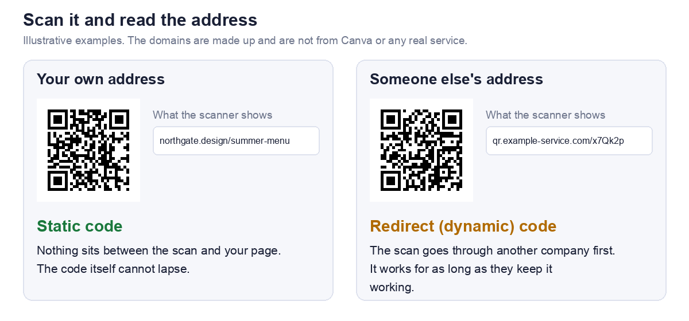

The short answer
It depends on the type of code, not the tool
There are two kinds of QR code, and they behave differently over time.
- A static code holds your actual address. There is no account, no server and no subscription behind it, so the code itself cannot expire.
- A dynamic or redirect code holds a short address on another company's server, which sends people on to your page. It works for as long as that company keeps the redirect working, and that can depend on a plan, a trial or a setting.
So the real question is which one you have
Going by the titles of Canva's own help pages, it has material on both static and dynamic QR codes. We could not read those pages, so we do not tell you here which kind a particular Canva option produces. What we can do is show you how to check any code in a minute, which is more reliable than any article, including this one.
Check yours in a minute
Step 1: Scan it with a plain QR scanner
Do not use a camera that opens the link straight away. Use a scanner that shows you the text inside the code first. Our QR scanner does this, and it can read an image of the code if you save it from your design.
Step 2: Read the address it shows
We tested our scanner on two codes, one holding a normal address and one holding a short redirect style address. For each it displayed the exact address inside the code.

Step 3: Decide which kind it is
Look at the domain, the part between https:// and the first slash. Compare it with the next section.
Step 4: Test the destination
Open the address in a private browsing window where you are signed out. This catches the page that only works for you, which is a separate way for a code to fail.
What the address tells you
Reading the domain
| The scanner shows | What it means | Can the code expire? |
|---|---|---|
| Your own web address, or the page you linked | A static code | No. Only the page can break |
| A short address on a domain you do not own | A redirect (dynamic) code | Yes, if whoever runs it stops the redirect |
| A well known link shortener | A redirect through a third party | Depends on that service |
| Something you cannot identify | Unknown. Investigate before printing | Unknown |
A caution on the last row
A code that sends people through an address you do not recognise is also a safety question, not just an expiry one. Our guide to are QR codes safe covers how to tell.
If it is a redirect code
Find out who runs the redirect
The domain in the address tells you. If you made the code inside a design tool, check that tool's help page for dynamic QR codes. For Canva that is its help page on dynamic QR codes, which we could not read, so we do not summarise it.
Questions to answer before you print
- What happens to the code if the plan or subscription ends? This is the question that matters most for anything printed in quantity.
- Can an expiry date be set, and is one set? A feature that lets you expire a code is useful, and also a way for one to stop working.
- Are there scan limits? A poster in a busy place can collect a lot of scans.
- Where does a visitor land if the code is switched off?
If you cannot find clear answers, treat the code as temporary and do not print it in large numbers.
If it is a static code
The code is fine, the page may not be
A static code cannot expire, but the page it points to can disappear. A code can be technically perfect and still lead nowhere.
What breaks a static code in practice
- The page moved or was deleted.
- The domain was not renewed.
- The page needs a login that the visitor does not have.
- A shared file had its sharing turned off.
If you want a code that survives the destination moving, point it at a short path on a domain you own and redirect from there. We cover that tradeoff in static vs dynamic QR codes.
How to replace a redirect code with a static one
Steps
- Find the final destination. Open the redirect code's address and copy the address of the page you land on.
- Make a static code for it. Paste that address into our URL QR code generator, which builds a static code in your browser with no account.
- Test it. Scan the new code with a plain scanner and confirm it shows your address.
- Replace the old one wherever it is printed.
What you give up
A static code cannot be edited and cannot report scans. If you need either, you need a dynamic code, and then it matters that you know who runs the redirect.
If your link is long, check the size before reprinting. Our guide to turning a link into a QR code shows what spaces and tracking text add to the printed size.
Why a QR code stops working
The causes, and how to check each one
| Cause | How to check |
|---|---|
| The redirect was switched off or the plan ended | Scan it and read the address. If it is on a third party domain, ask them |
| The destination page moved or was deleted | Open the address in a private window |
| The destination needs a login | Open it signed out |
| The domain lapsed | Visit the bare domain |
| The printed code is too small, blurred or low contrast | Scan a printed proof. See why QR codes fail to scan |
Not every failure is an expiry
When someone says a code has expired, it is often one of the last four rows, and none of them is fixed by changing the generator. Working out which one it is saves you reprinting twice.
What we could not check
Canva's own pages
Canva's website does not allow automated access, so we could not read its help pages. This article therefore says nothing about Canva's plans, limits, expiry settings or which of its options produce which kind of code. For those, read Canva's help page on creating and managing QR codes and its help page on dynamic QR codes.
Why you can still trust the method
The check above does not depend on Canva. It reads what is actually inside your code, which is the one thing that decides whether it can lapse. If anything here is out of date or wrong, tell us through the contact page and we will correct it.
Frequently asked questions
Does a Canva QR code expire?
It depends on whether the code is static or a redirect. A static code holds your address and cannot expire. A redirect code works only while whoever runs the redirect keeps it working. Scan yours and read the address to see which you have.
How do I know if my QR code is dynamic?
Scan it with a plain scanner and read the address. If it is on a domain you do not own, it is a redirect, which is what dynamic means in practice.
Will my printed QR code stop working if I cancel a subscription?
If it is a redirect code, it might, and the provider's help pages are where to confirm it. If it is a static code, cancelling has no effect on the code itself.
Can I make a QR code that never expires?
Yes. Make a static code, and point it at an address you control. Our URL generator does this with no account and nothing uploaded.
Is a static QR code really permanent?
The code is. It is a printed pattern holding text. What can fail is the page it points to, so keep that address working for as long as the print exists.
My code scans but shows an error. Has it expired?
Not necessarily. Read the address it holds and open it in a private window. If the page itself fails, the code is fine and the destination is the problem.